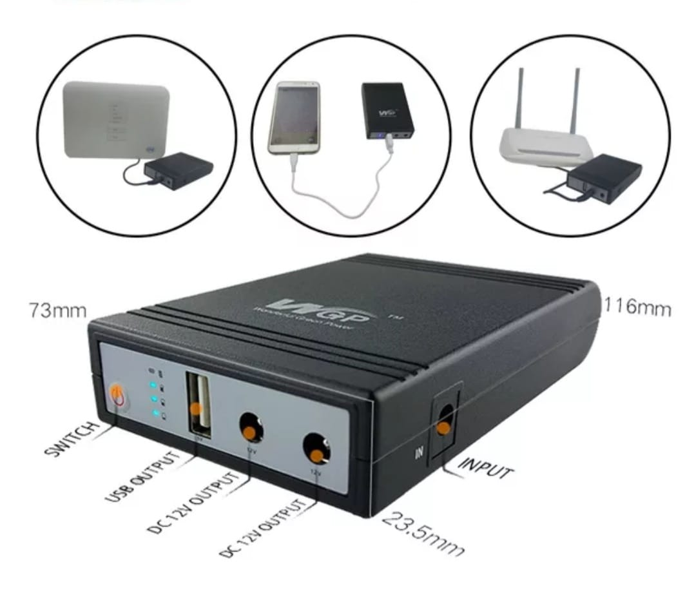
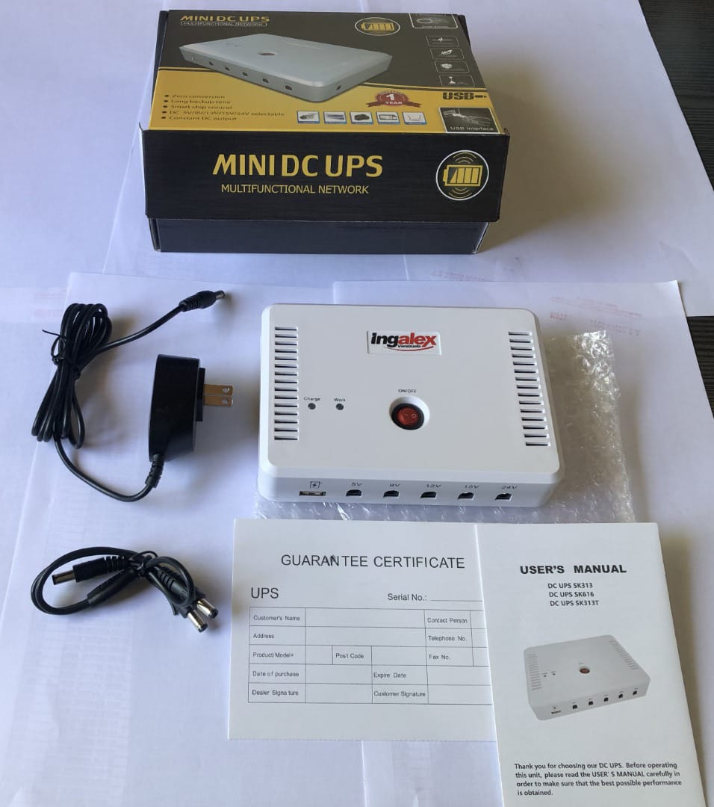
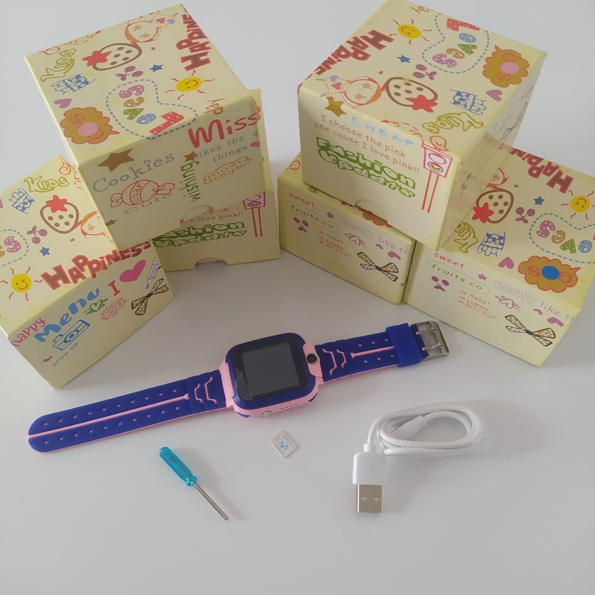
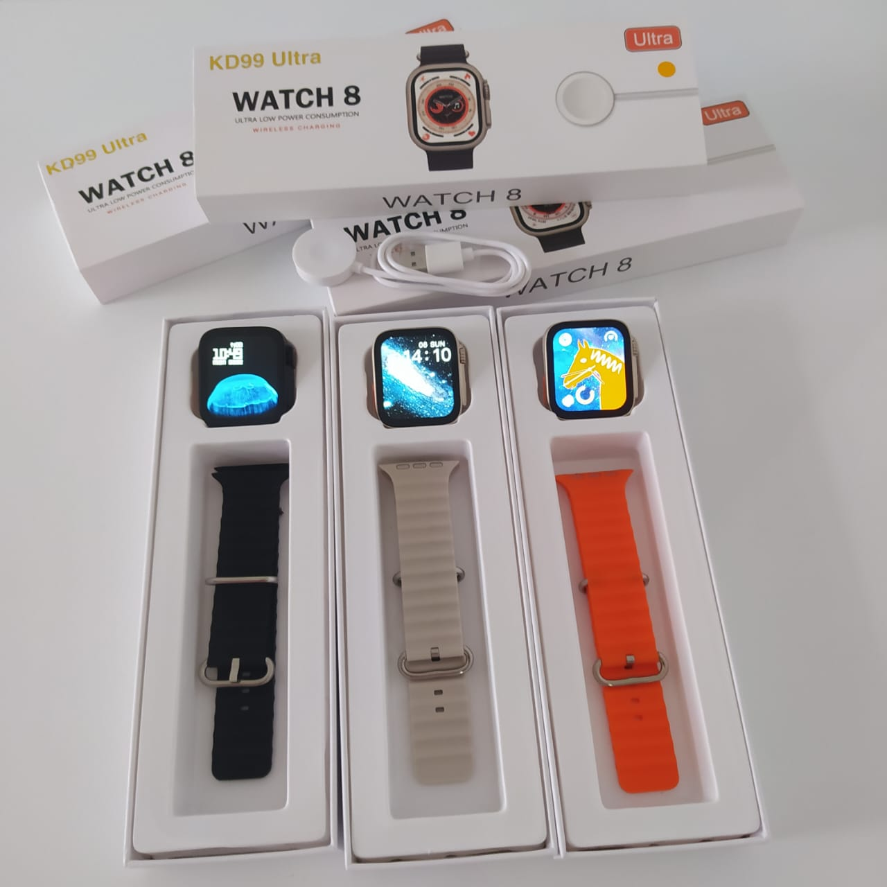
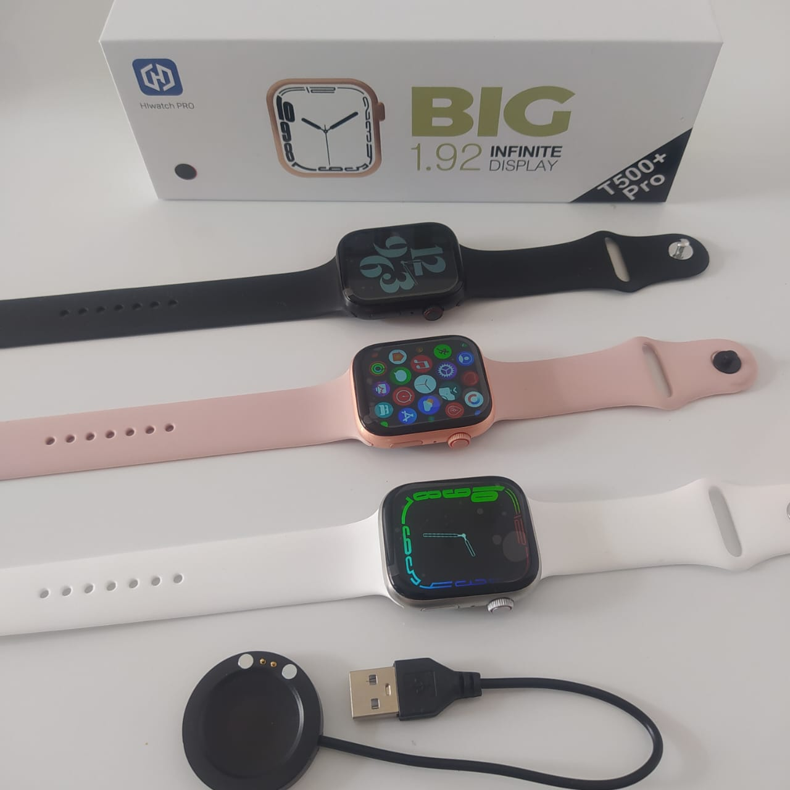
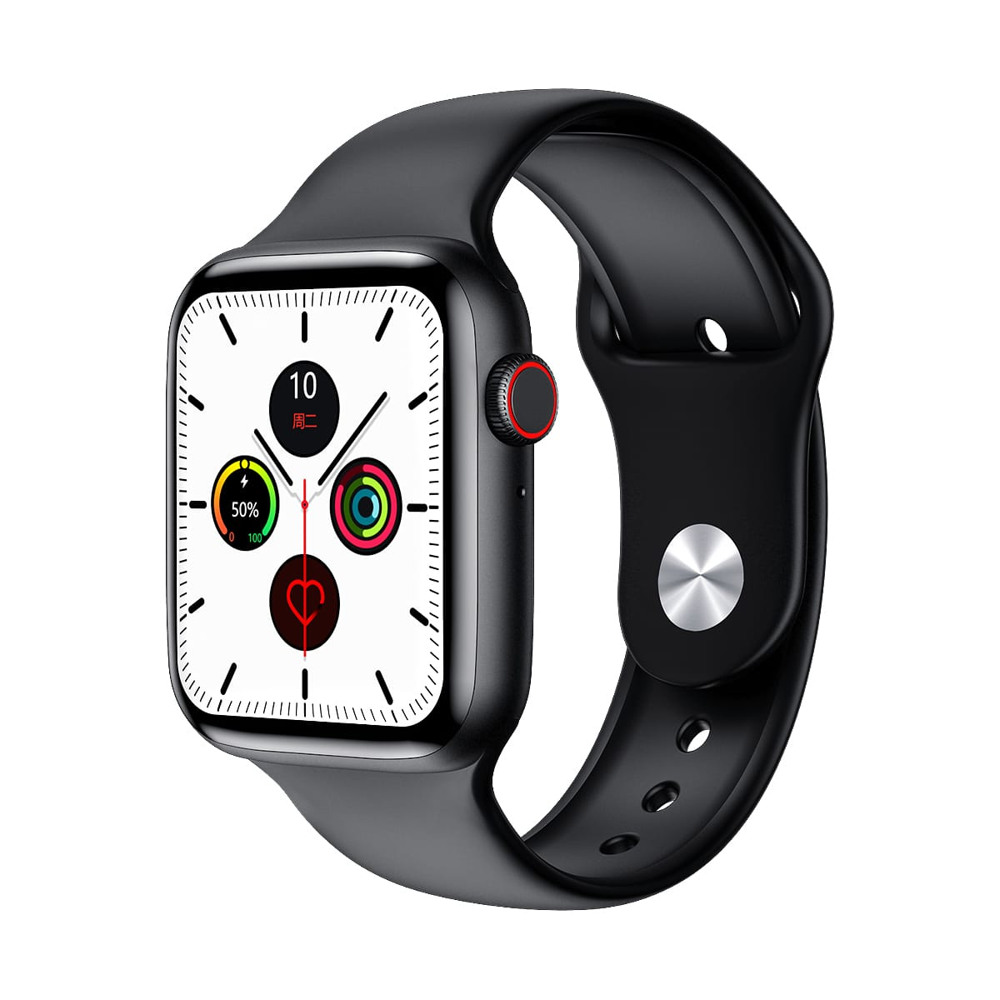

Productos
Mini Ups
DC Jack de entrada (conector): 5,5*2,1mm Puede proporcionar horas de funcionamiento durante la falla eléctrica. Está diseñado para proporcionar respaldo de energía de emergencia a todo tipo de equipos de alimentación como enrutadores, módems,decodificador, sistemas de teléfono, sistema de vigilancia, sistemas de alarma, sistemas de comunicación personal, radios, cámaras digitales, dispositivos Bluetooth, tarjetas inteligentes y muchos otros equipos de telecomunicación clave. Salida DC Jack (conector): 5,5*2,5mm Accesorios: Cable de conector X 2;Cable USB-DC X 1
5500,22Auricular S9
Excelente calidad Bluetooth 5,0 de sonido estereo y micrófono para usar como manos libres, contestando la llamada entrante desde su celular. Conexión hasta 10 metros.
5500,22Alexa
Corneta/altavoz inteligente, que recibe órdenes de voz y realiza diferentes actividades. Responde a cualquier pregunta con respecto a juegos, chistes, para escuchar música, audio libros, canciones de radio, noticias, programas, entrevistas y mucho más.
5500,22Camara
Echo Show 5 con Pantalla inteligente HD Alexa y cámara de 2 MP Ve tu día claramente con Alexa establece alarmas y timers, pronóstico del tiempo, haz videollamadas y reproduce música o programas, películas a través de Prime Video, Netflix.
5500,22Echo Dot
Amazon - Altavoz inteligente Echo Dot (4th Gen) con Alexa. Nuestro altavoz inteligente más popular tiene un diseño elegante y compacto que se adapta perfectamente a espacios pequeños. Ofrece voces nítidas y graves equilibrados para un sonido completo que puede disfrutar en cualquier lugar de su hogar.
5500,22Mini Ups
Mini DC UPS para conectar router, módem, celular, punto de venta, cámaras de seguridad, vídeo juegos, laptop entre otros, con Batería de litio de 15.600mAh. Protección contra sobrecarga y sobre descarga, contra fugas eléctricas.
5500,22Reloj Infantil
Funciona con Chip de celular. Recibe llamadas. Guarda contactos. Posee cámara fotográfica y galería. Micro chat, ( para ver mensajes y audios que los padres envian). El niño puede enviar audios y grabar mensajes de voz. Pantalla táctil, compatible con Android, iOs. Rastreador base LBS, que da la ubicación de la antena telefónica más cercana a la que está conectada la tarjeta SIM del reloj.
5500,22Reloj Serie 8
Recibe y se hace llamadas. Recibe todas las notificaciones de su celular ( Whatsapp, mensajes, facebook, Instagram etc). Podometro, cronómetro, calculadora, control del sueño, control de música vía Bluetooth, agenda ( guarda todos sus contactos), se controla para sacar fotografía. Modo deporte. Cuenta con 4 luces LED en la parte posterior, lo que permite sea más preciso el modo salud ( mide oxígeno en la sangre, ritmo cardíaco, presión arterial).
5500,22Reloj t500-Pro
Conexión con Bluetooth. Recibe y se hacen llamadas. Posee funciones desde su celular, recibe notificaciones ( Whatsapp, facebook, Instagram, entre otras). Variedad modelos de pantalla. Es táctil y funciona también con su perilla lateral para buscar y seleccionar el menú y sus funciones.
5500,22Reloj w26
Versión mejorada, recibe y hace llamadas por conexión Bluetooth. Recibe notificaciones de Whatsapp, mensaje y redes sociales. Funciona digital y con el botón lateral para seleccionar funciones. Pantalla muy nitida lo que permite mejor visión desde cualquier ángulo. Sumergible al agua 100% resistente.
5500,22